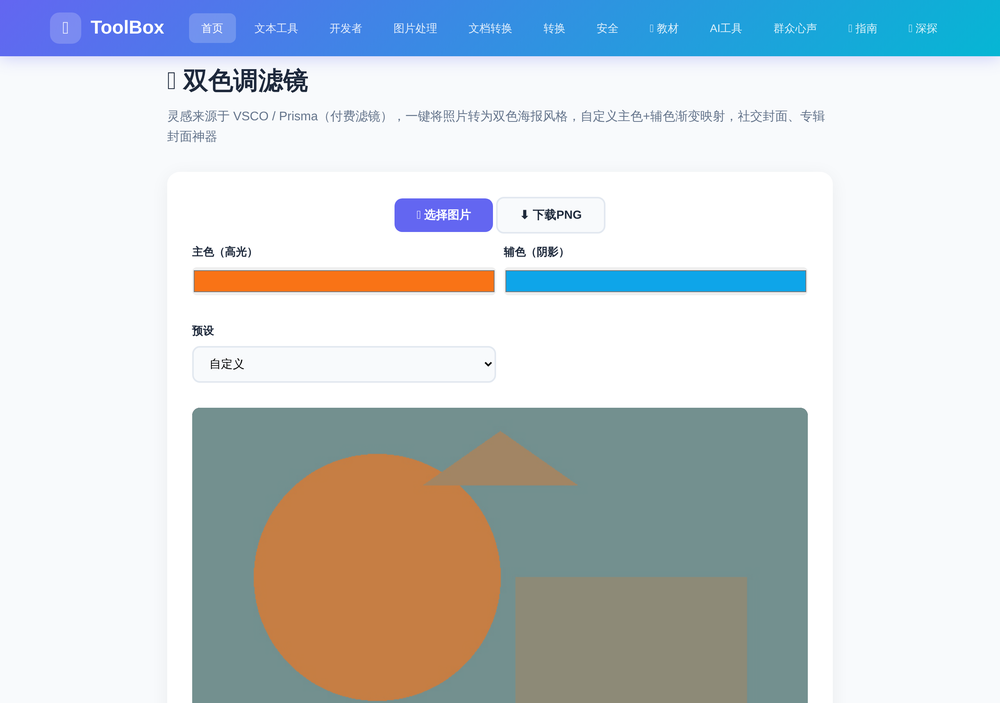
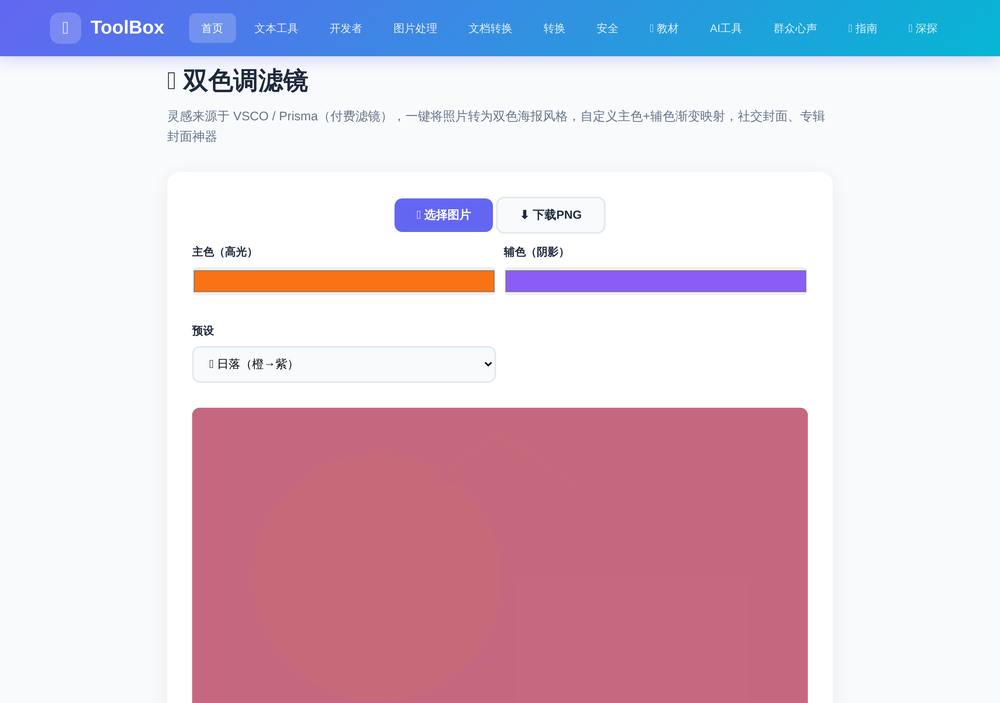
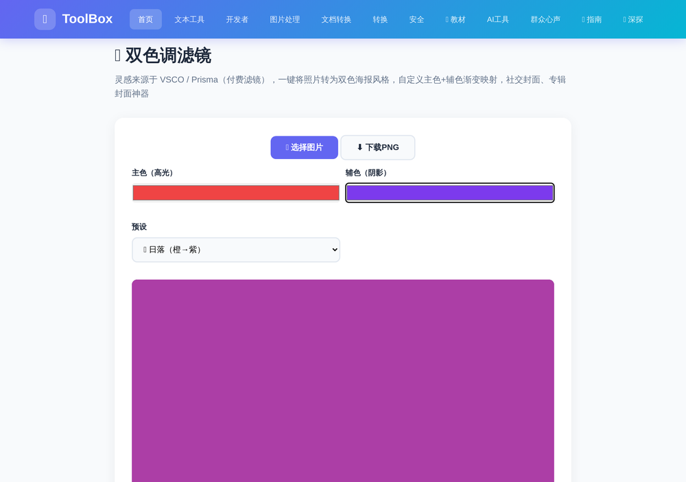

刷社交平台时，你一定见过那种只用两种颜色、却特别"高级"的图片——演唱会海报、专辑封面、街头艺术、品牌主视觉……那种风格就叫 双色调（Duotone）。它把整张照片的明暗层次映射成"主色 + 辅色"两种颜色，极简又充满设计感。
以前要做出这种效果，得在 Photoshop 里折腾"渐变映射"，还得懂配色。现在用 ToolBox 的 在线双色调滤镜，上传一张照片，3 步就能搞定：选颜色、选预设、下载。5 种现成配色方案 + 主色辅色自由自定义，纯浏览器处理、隐私安全，完全免费。
进入 ToolBox 首页，点击「图片处理」分类，找到「🎨 双色调滤镜」工具卡片；或者直接点击下方按钮快速进入。
点击「📂 选择图片」按钮，从电脑里选一张照片。建议选明暗层次丰富的照片（有清晰的亮部与暗部），这样双色效果最明显。

这是最有意思的一步，工具默认使用 橙色（高光）+ 蓝色（阴影） 的对比配色。想换风格，有两个办法：
| 预设 | 配色 | 气质 / 适用场景 |
|---|---|---|
| 🌅 日落 | 橙 → 紫 | 温暖、浪漫，适合夕阳、人像 |
| 🌊 海洋 | 蓝 → 青 | 清爽、冷静，适合海景、科技感内容 |
| 💜 霓虹 | 紫 → 粉 | 潮流、赛博，适合音乐节、夜店海报 |
| 🌿 薄荷 | 绿 → 青 | 清新、治愈，适合植物、生活方式内容 |
| ⚫ 单色 | 黑 → 白 | 黑白经典，杂志感、纪实风 |
选中某个预设后，效果立刻刷新在画布上。下面就是用「🌅 日落」预设渲染同一张照片的效果：

想彻底掌控配色？点击「主色（高光）」或「辅色（阴影）」的颜色块，在取色器里选择你的专属颜色。下图把主色换成了亮红、辅色换成了深紫，一张高级感十足的双色图立刻成型：

满意之后，点击「⬇️ 下载PNG」按钮，高清 PNG 图片会自动保存到你的电脑，可直接用于封面、海报、头像等任何场景。
双色风格为什么流行？因为它用最少的颜色传递最强的情绪。这些场景直接用得上：
Q：照片会上传到服务器吗？会不会泄露隐私？
不会。整个处理过程全部在你的浏览器本地完成（Canvas 像素处理），照片不会上传到任何服务器，可以放心使用。
Q：哪种照片做双色调效果最好？
明暗层次分明、对比度高的照片效果最好——比如有天空和人像轮廓的街景、有光斑的人像。整体过暗或过亮的照片，双色层次会不那么明显，可以先在其它工具里提亮对比度再处理。
Q：只能选预设颜色吗？能精确到某一种品牌色吗？
完全可以。在「主色（高光）」和「辅色（阴影）」的取色器里，你可以精确挑选任意颜色，甚至输入十六进制色值（如 #EF4444），实现品牌色统一。
📌 还没试过？上传一张照片，3 步做出你的双色海报
🎨 去制作双色海报 →